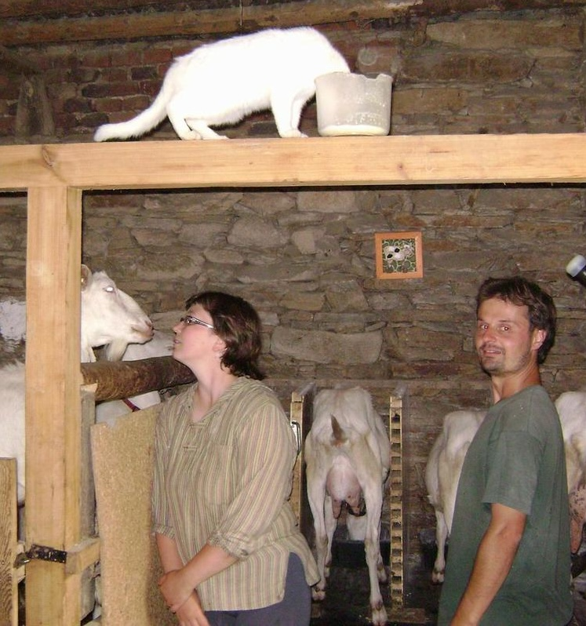
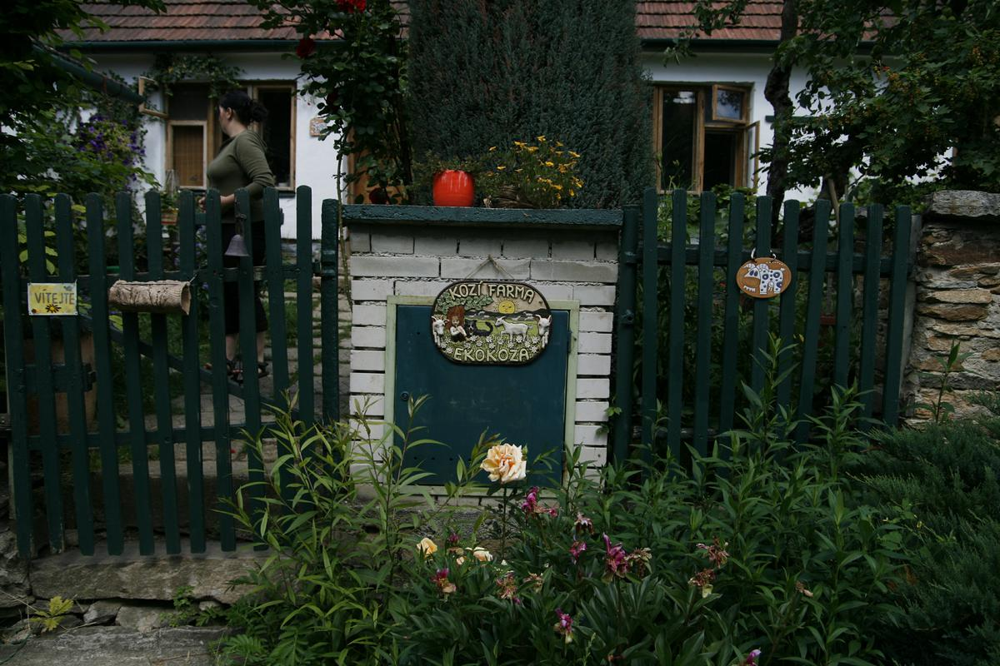
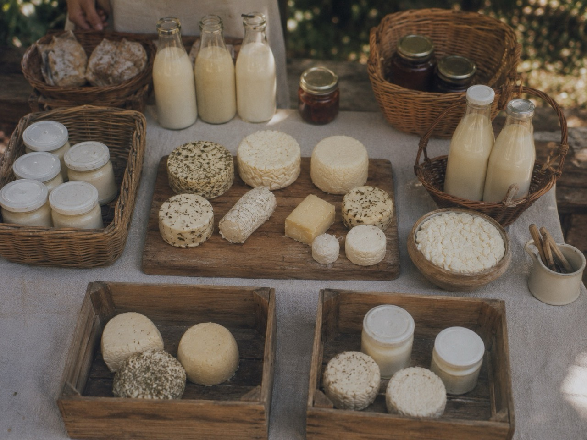
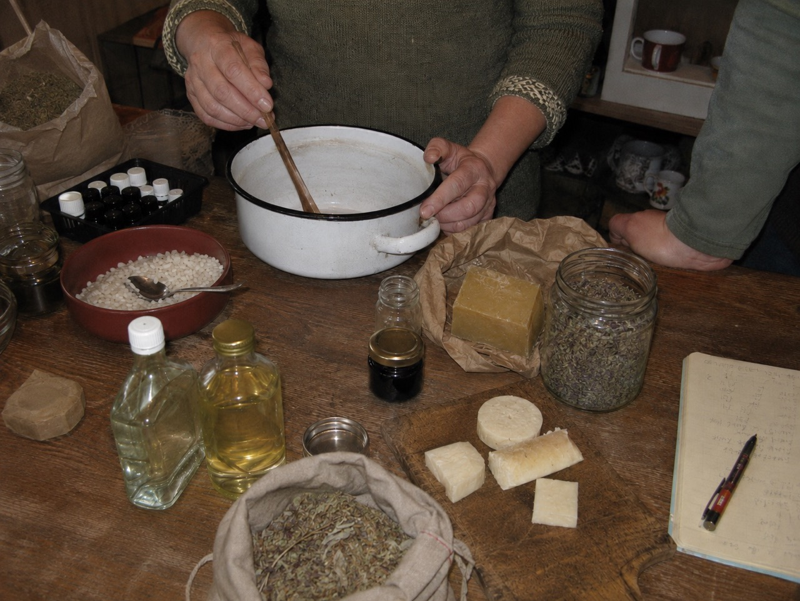
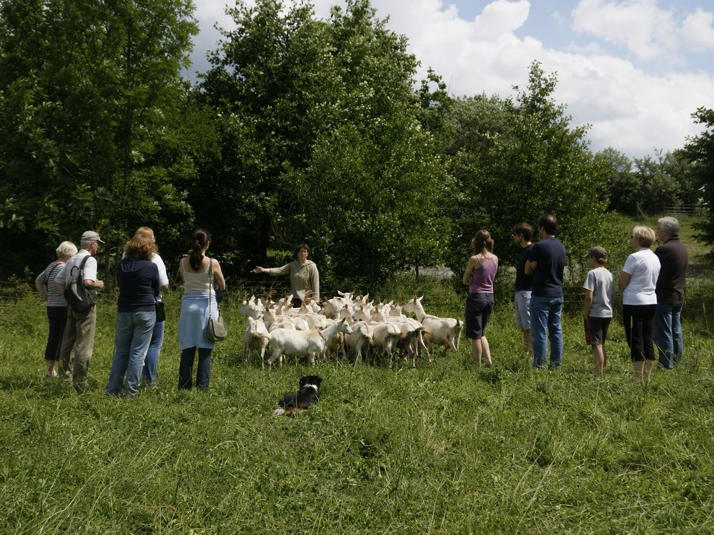
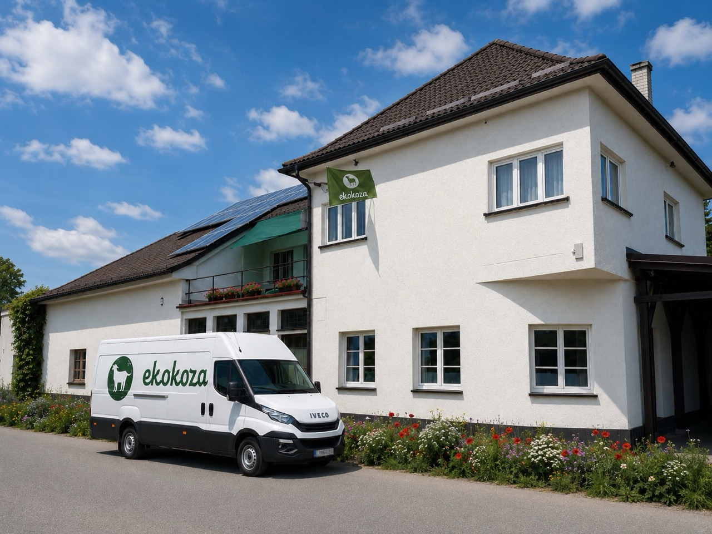

Náš příběh · od roku 2007
Ekokoza nevznikla z obchodního plánu. Vznikla z obyčejné rodinné potřeby, z práce rukama a z touhy rozumět tomu, co jíme, používáme a tvoříme. Od první kozy přes sýry a mýdla až po evropské zázemí pro více než půl milionu zákazníků se měnilo měřítko. Důvod zůstal stejný.

Marta a Hugo Čapkovi v začátcích Ekokozy — v době, kdy každodenní život s kozami určoval rytmus celé rodiny.
Návrat ke kořenům pro nás neznamená odmítnout současnost. Znamená znovu vzít část odpovědnosti do vlastních rukou — vědět, z čeho věci vznikají, umět se rozhodnout a tvořit s pochopením.
2009
Rok, kdy vznikl první český e-shop a spolu s ním také e-shop pro Slovensko
Stovky
Ověřených receptů a postupů, které propojují surovinu s konkrétním výsledkem
500 000+
Zákazníků z celé Evropy, kteří u nás našli suroviny, postupy nebo zázemí pro svou výrobu
Napříč EU
Pro domácí tvůrce, nadšence i profesionální výrobce
První potřeba
Jedna koza vedla k druhé. A jedna otázka k další.
Pořídili jsme si jednu kozu. Jenže koza potřebuje společnost, takže přibyla druhá. Pak další. A než jsme se nadáli, žili jsme se stádem několika desítek koz.
Více koz znamenalo více mléka, než jsme dokázali spotřebovat. A tak přišla další přirozená otázka: co s ním? Začali jsme vyrábět sýry a jogurty. Bez školy, bez dostupných návodů a bez jistoty, že se první pokus povede.
Praktické informace byly tehdy na internetu jen těžko dostupné. Syřidla a kultury se prodávaly hlavně ve velkých množstvích a běžný člověk si neměl kde koupit právě tolik, kolik potřeboval. Učili jsme se pokusem, chybou, pozorováním a sdílením.
A právě tady se poprvé objevil princip, který Ekokozu provází dodnes: co jsme sami pracně hledali, začali jsme zpřístupňovat ostatním.

Dům v Lesním Jakubově, kde vyrostla původní farma a kde se z první potřeby postupně zrodila Ekokoza.
Vývoj, který nebyl naplánovaný
Ne skokem a ne podle tabulky. Každý další krok vyrostl z konkrétní potřeby, zkušenosti a otázky lidí kolem nás.
První koza
Vlastní mléko pro rodinu a první krok k větší soběstačnosti.
První sýry
Učení od základů, hledání postupů, syřidel a kultur.
Český a slovenský e-shop
Potřeby pro výrobu v množstvích, která dávají smysl i doma.
První mýdlo
Ze syrovátky k mýdlům, kosmetice, svíčkám a šetrné domácnosti.
Místo setkávání
Trhy, bedýnky, návštěvy, recepty a zkušenosti sdílené s dalšími.
Nové zázemí v Beskydech
Stěhování do Fryčovic, větší sklady a soustředění na rozvoj e-shopu.
Ekokoza napříč Evropou
Francie, Německo, Rakousko, Itálie a zákazníci v celé Evropské unii.
Dvojnásobná skladová kapacita
Nový sklad umožňuje držet dostatečné zásoby i pro větší výrobce a dál rozšiřovat sortiment.
Od potřeby ke službě
Syřidla a kultury jsme museli nakupovat ve větších baleních, než jsme dokázali využít. Přebytek jsme proto nabídli přátelům a lidem v okolí. Brzy jsme zjistili, že těch „přátel“ je překvapivě mnoho.
V roce 2009 jsme spustili první český e-shop a spolu s ním také e-shop pro Slovensko. Ne proto, že bychom si řekli, že chceme vybudovat obchod. Chtěli jsme zpřístupnit to, co nám samotným chybělo: rozumné množství, srozumitelný postup a člověka, kterého se lze zeptat.
Sýry jsme mezitím vozili na trhy a přidávali do bedýnek s dalšími výrobky. Z původně rodinné potřeby se pomalu stávalo zázemí pro další lidi, kteří chtěli věci dělat sami a dělat je dobře.

To, co jsme nejprve vyráběli pro sebe, jsme brzy začali vozit na trhy a sdílet s lidmi v okolí.
Od sýra k mýdlu
Po výrobě sýrů zůstávala syrovátka. A protože jsme nechtěli plýtvat tím, co ještě může dobře posloužit, vzniklo z ní naše první mýdlo.
Pak přišly balzámy, masti, krémy, svíčky a šetrné prostředky pro domácnost. A znovu se opakovalo totéž: nejprve jsme se něco učili pro sebe, potom jsme sdíleli postup a nakonec nabídli i suroviny, které byly k výrobě potřeba.

První mýdla a kosmetika vznikaly doma, z obyčejných surovin, vlastních pokusů a pečlivě zapisovaných zkušeností.
1
Vyzkoušet v praxi
Nejdříve pochopit surovinu, postup i jeho hranice.
2
Popsat souvislosti
Sdílet recept, zkušenost, chyby i důvod, proč něco funguje.
3
Zpřístupnit ostatním
Nabídnout suroviny, obaly, pomůcky a možnost se zeptat.

Farma se stala místem setkávání, kde se zkušenosti nepředávaly jen slovy, ale hlavně společně prožitým časem.
Farma jako společenství
Na farmu začali jezdit lidé. Přijížděli se podívat, ochutnat, zeptat se a na chvíli vstoupit do života, který vznikal blízko zvířatům, půdě a rytmu roku.
Mluvili jsme o soběstačnosti, o vztahu ke zvířatům a o tom, co každý den používáme na tělo, v kuchyni i doma. Sdíleli jsme naše postupy a dostávali zpět zkušenosti, recepty a nápady ostatních.
Proto Ekokoza nikdy nebyla jen jednosměrný obchod. Od začátku ji spolutvořili lidé, kteří u nás nakupovali, zkoušeli, ptali se a posílali své zkušenosti dál. Z této výměny vyrostl i Ekokozí receptář, který dnes obsahuje stovky ověřených postupů a dál se rozrůstá.
Když hodnoty nejsou jen slova
Život se zvířaty nebyl romantickou kulisou. Byl krásný, náročný a plný odpovědnosti. A ukázal nám také rozpor, který jsme nedokázali přehlížet.
V mléčném chovu se přirozeně rodí i kozlíci. Pro ně však v běžném systému často nezbývá jiná cesta než chov na maso nebo využití jako krmivo pro další zvířata. My jsme kozy nikdy na maso nechovali a s touto realitou jsme se nedokázali dlouhodobě smířit.
To byl jeden z hlavních důvodů, proč jsme farmu postupně uzavřeli. Poslední ekokozí důchodkyně se s námi přestěhovaly do Beskyd, kde ještě několik let dožívaly na pastvě bez jakéhokoli užitkového chovu — jednoduše jako naše parťačky.
O to více si vážíme všech farmářů, kteří v této práci pokračují a každý den hledají co nejlepší podobu soužití lidí, zvířat a krajiny. Je to tvrdá, krásná a potřebná práce. Jsme upřímně vděční, že ji někdo dělá.
Nebyl to konec našich hodnot.
Byl to důkaz, že je bereme vážně i ve chvíli, kdy je poctivé rozhodnutí těžší než pokračovat ve známém způsobu. Farma nás zároveň naučila hledat rovnováhu i tam, kde žádné dokonale čisté řešení neexistuje.
Kozy odešly. Myšlenka zůstala.
Se stěhováním do Fryčovic pod Beskydami přišlo i větší zázemí pro e-shop. Přibyly sklady, tým, dokumentace k surovinám, širší sortiment a systém, který musí dobře fungovat nejen pro první domácí pokus, ale i pro pravidelnou výrobu. V roce 2026 dokončujeme nový sklad, který zdvojnásobuje naši dosavadní kapacitu.
Dnes u nás najdete malé varianty pro testování receptury i větší balení pro vlastní značku. Začátečník potřebuje oporu. Pokročilý tvůrce přesnost. Profesionální výrobce stabilitu, informace a partnera, který chápe, že surovina musí dorazit ve správné kvalitě i ve správný čas.
Profesionalizace pro nás neznamenala opustit původní myšlenku. Znamenala vybudovat jí pevnější zázemí. Jsou věci, ze kterých neslevíme — a zároveň víme, že poctivost často znamená hledat nejlepší možnou rovnováhu tam, kde ideální řešení neexistuje.

Dnešní Ekokoza ve Fryčovicích pod Beskydami — profesionální zázemí, které stále stojí na stejné poctivosti a blízkosti k lidem.
Jazyk se mění. Naše odpovědnost ne.
Od roku 2023 rozvíjíme Ekokozu ve Francii, Německu, Rakousku, Itálii a dalších zemích Evropské unie. Objednávky stále připravujeme ve Fryčovicích pod Beskydami. V zahraničí však nechceme pouze překládat stejná slova do jiného jazyka — nasloucháme konkrétním lidem, jejich zkušenostem a potřebám a podle nich přizpůsobujeme také naši komunikaci a podporu. Za každou zásilkou stojí tentýž tým a stejná odpovědnost. Potřeba rozumět tomu, co si dáváme na tělo, co používáme doma a z čeho vyrábíme, totiž žádné hranice nemá.
Co se nezměnilo
Sortiment, technologie i měřítko se vyvíjejí. Tyto principy jsou ale stejné od chvíle, kdy jsme poprvé hledali syřidlo pro vlastní sýr.
01
Příroda jako kompas, ne kulisa
Máme hranice, které nepřekračujeme. Zároveň hledáme šetrná a funkční řešení i tam, kde ideální možnost neexistuje. Kompromisy nezakrýváme — otevřeně vysvětlujeme jejich důvody i to, proč jsme se rozhodli právě tak.
02
Vědět je stejně důležité jako mít
Surovina bez souvislostí není úplné řešení. Proto ji propojujeme s receptem, postupem, dokumentací a možností obrátit se na člověka, který poradí.
03
Poctivé řemeslo a ověřená praxe
Vycházíme z toho, co lze skutečně vyrobit, zopakovat a vysvětlit. Ne z líbivých zkratek. Odbornost pro nás znamená přesnost bez povýšenosti.
04
Spolutvorba místo anonymního prodeje
Recepty, zkušenosti a otázky zákazníků se vracejí zpět do Ekokozy. Co objeví jeden člověk, může pomoci dalšímu — v jiném městě, zemi i jazyce.
Místo pro různé cesty
Stejná myšlenka může mít mnoho podob. Naší úlohou je dát vám zázemí odpovídající tomu, kde právě jste.
Začínám
První jistý krok
Srozumitelný recept, malé balení, vysvětlení funkce surovin a možnost zeptat se, když si nejste jistí.
Tvořím pravidelně
Prostor pro vlastní cestu
Široký výběr, hlubší souvislosti, obaly a pomůcky, díky nimž můžete recepturu upravovat a posouvat dál.
Vyrábím profesionálně
Stabilní partner pro výrobu
Větší balení, dokumentace, plánování odběrů, odborná komunikace a zázemí pro opakovanou výrobu.
Příběh, který se stále píše
Pokračuje pokaždé, když vezmete surovinu do rukou a vznikne z ní něco vlastního. Když sdílíte recept, předáte zkušenost nebo vytvoříte výrobek pro člověka, na kterém vám záleží.
Možná jste k nám přišli pro jednu surovinu. Budeme rádi, když u nás najdete také souvislosti, oporu a lidi, se kterými můžete svou cestu sdílet. Jsme rádi, že jsme se našli.